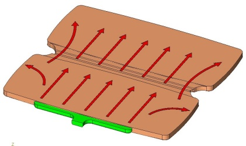

|
Esnek
Menteþeler:
Akma
gerilmesi ve akma uzamasý biliniyorsa, bu deðerler denklem
üzerinde yerine konduðunda L1 için en küçük deðer
bulunacaktýr. Menteþe kalýnlýðý ve uzunluðu bilinmelidir.
Genellikle menteþe kalýnlýðý 0,2-0,38 mm arasý en düþük deðer
seçilir ve uzunluðu hesaplanýr.
Esnek Olmayan Menteþeler:
Esnek
olmayan menteþeler sadece bir kaç kez açma kapama ömürlüdürler.
Muhtemelen çatlak, ilk bükme esnasýnda oluþur.
Yýrtýlmaya
Karþý Direnç:
Menteþe, kenarýna uygulanan burulma momenti nedeni ile, kolayca
yýrtýlma eðilimi gösterecektir. Bu problemin çözümünde aþaðýdaki
yollar izlenir.
Þekil 8. Yýrtýlmaya Karþý Direnç
- Menteþe
sonu kalýnlýðý (resimde kýrmýzý renkli bölge) pratik olarak,
menteþe kalýnlýðýnýn iki katý olarak düþünülür. Menteþe
kalýnlýðý 0,2mm ise menteþe sonu kalýnlýðý, yýrtýlmayý önlemek
için 0,4 mm yapýlmalýdýr ve iki et kalýnlýðý arasý lineer
bir geçiþ ile saðlanmalýdýr.
- Menteþe
geçiþleri (resimde mavi renkli bölge) radyüslü yapýlýr.
Tasarýmda
dikkat edilecek noktalar:
Uzun
ömürlü esnek menteþeli ürün dizaynlarýndaki ilk anahtar nokta,
polimer zincir yapýsýný , dik bir açý ile menteþe kývrým bölgesine
göndermektir.
Parçalar
kalýplandýktan hemen sonra birkaç kez kývrýlarak,menteþe bölgesine,
daha çok moleküler akýþ saðlanýr.
Diðer
önemli nokta ise yolluk giriþi ve plastik akýþkanýn kararlý
bir þekilde, üst yüzeye mümkün olduðu kadar paralel olacak
þekilde ilerlemesidir.
|
|
|
|
Þekil
9:Yolluk giriþi gövdenin ortasýndan yapýldýðý durumda,
plastik akýþ yönleri gösterilmiþtir.
|
Þekil
9-1:Siyah renkli kaynak çizgisi oluþumu ve kýrmýzý renkli
hava boþluðu oluþumu görülmektedir. Kaynak çizgisinin
menteþe boyuncun oluþmasý da kaçýnýlmaz bir durumdur.
|
Diðer
önemli nokta ise yolluk giriþi ve plastik akýþkanýn kararlý
bir þekilde, üst yüzeye mümkün olduðu kadar paralel olacak
þekilde ilerlemesidir.
Þekil
9'da kötü dizayn edilmiþ bir yolluk sistemi görülmektedir.
Plastik, yolluk merkezinden dairesel þekilde akarak kalýp
içerisine yayýlýr. Akýþkan önce menteþe kenarýna yaklaþýr
fakat kesit daralmasý ile karþýlaþtýðý için durur. Akýþkan
plastik gövdenin her yerini doldurduðunda, menteþedeki kesit
daralmasýný geçmeye zorlanýr. Menteþeye ilk deðen plastik
daha soðuk olacaðýndan, ince kesidi geçemeyecektir. Bu sebeple
menteþenin arka tarafýnda istenmeyen bir hava boþluðu ve menteþe
eksenine dik bir kaynak izi (soðuk mal birleþim izi) oluþacaktýr.
Þekil 10'da yolluk sistemi, bu sorunu çözecek þekilde tasarlanmýþtýr.
Yolluk giriþi geniþ bir hat üzerinden verilerek, akýþkanýn
menteþe duvarlarýna kadar, düzgün,paralel bir ilerlemesi ve
menteþe duvarýna ayný anda ulaþmasý saðlanmaktadýr. Bu sebeple
akýþkan menteþeyi geçtiðinde doðrusal ilerlemesine devam edebilmektedir.
Bu
yolluk giriþi, ortadan yolluk giriþine göre daha düzgün bir
plastik akýþý saðlamaktadýr.

Þekil 10: Uygun þekilde tasarlanmýþ yolluk giriþi (yeþil renkli
bölge)
ÖRNEK-1:
Bu esnek menteþenin, deforme olmadan, 180º açýlýp kapanabilmesi
için, minimum menteþe uzunluðunu bulalým;
Not:
Bu teknik veriler genel bir PP malzeme içindir. Kullanacaðýnýz
malzemenin teknik özelliklerini malzeme tedarikçinizden isteyiniz.
Minimum
esnek menteþe uzunluðu;
ÖRNEK-2:
Eðer
180º lik bir kývrýlma hareketi istenmiþ olsaydý, menteþe boyu
12,4 mm olacaktý.
Kaynak:
Paul A. Tres's book "Designing Plastic Parts for Assembly
2nd, Revised Edition."
Not:
Bu raporu MS Word formatýnda indirmek için týklayýnýz
(1,08MB)
|